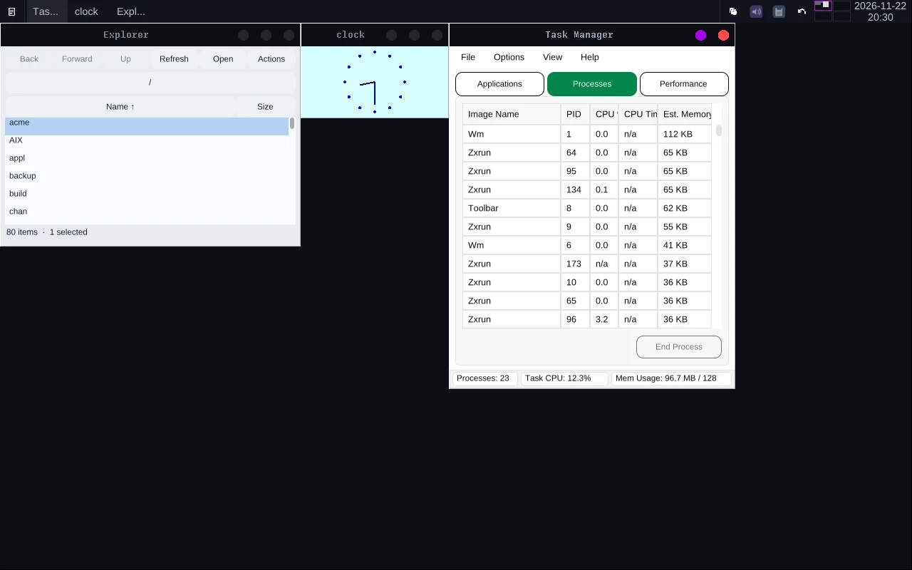
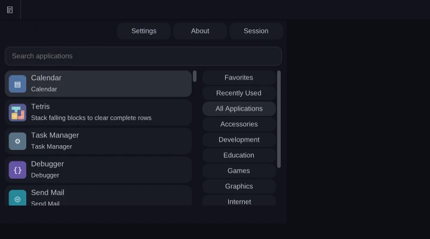
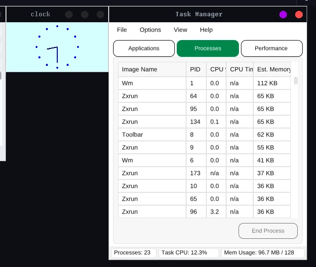

An Inferno fork
Every device, service and window is a file in a per-process namespace, shared over the Styx protocol. The hosted emulator runs on Linux and, now, in the browser.
An Inferno operating system
TaijiOS is our fork of Inferno. Programs see every resource as a file, Limbo code runs on the Dis virtual machine, and new applications ship as Ziran ZX bundles on the Rill desktop. It boots right here in your browser.
The real emulator, compiled to WebAssembly: about 7 MB to start, applications load as you open them.

Click the screen to type. The menu is at the top left; switch workspaces with Ctrl+Alt+Left and Right.
What TaijiOS is now
Every device, service and window is a file in a per-process namespace, shared over the Styx protocol. The hosted emulator runs on Linux and, now, in the browser.
Limbo programs keep running on Dis while applications move to Ziran. Each one compiles to a portable ZX bundle that the emulator's ZX runtime verifies and runs.
Rill is the desktop: panel, menu, task list and workspaces, drawn with Kryon in the Sweet-Dark style. Dis and ZX applications open side by side.
Rill desktop
The applications menu groups every program by category and searches as you type. The panel keeps a task for each window, the workspace switcher and the clock.

ZX applications
Files, Clock, Task Manager and About are Ziran programs drawn with Kryon. Shell, Edit, Tetris and dozens more are the Limbo programs Inferno has always shipped.

Get it
git clone https://git.waozi.xyz/taijios/taijios
cd taijios/emu/Linux && mk install
cd ../.. && Linux/386/bin/emu -r "$PWD" -g 1280x800 wm/wm